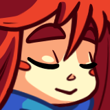

LOADING
♫
拾起「虚空」
山间聊天
请先
登录
，才能进入实时聊天。
铭记 · 山间聊天
{{ statusText }}
正在拉取聊天记录…
还没有人说话，发第一条消息试试～
历史记录加载失败。
{{ it.label }}
{{ it.text }}
{{ it.name }}
{{ it.initial }}
{{ it.initial }}
{{ it.name }}
{{ typingName }} 正在输入

{{ s.label }}
↑